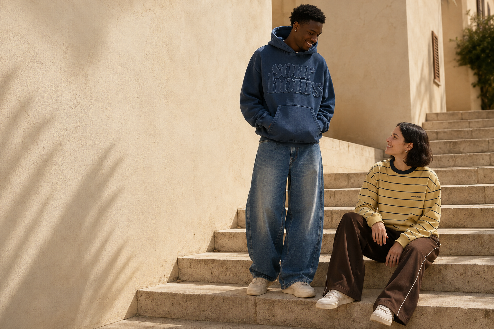
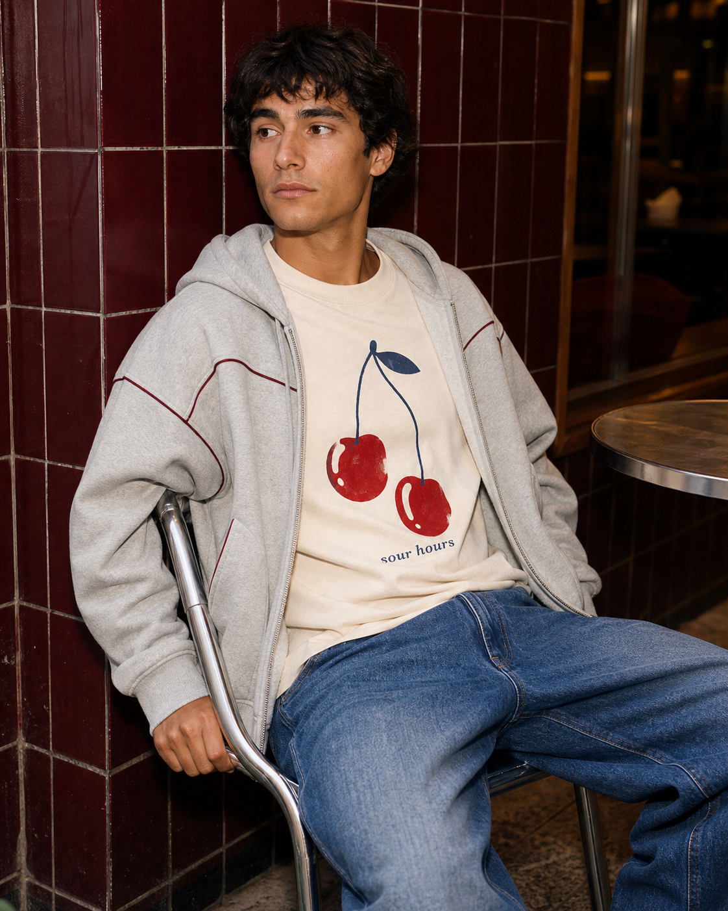
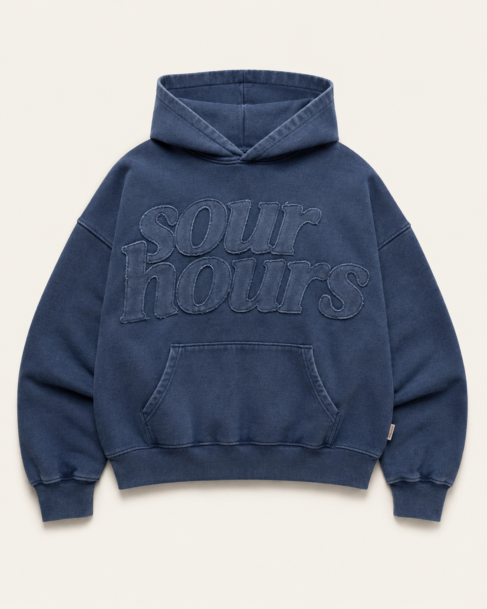
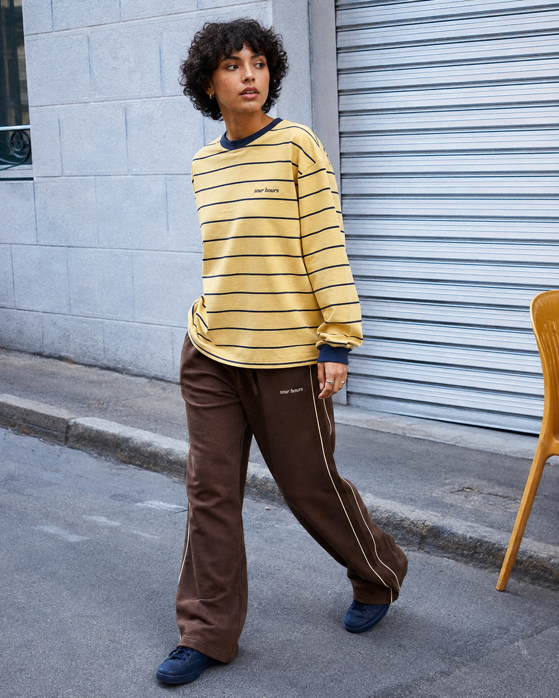

01 / CITY HOURS
Bleu sur bleu.
Raw Hours + Daily Curve


Du premier café au dernier métro.
Prix de positionnement à confirmer après devis. Les images représentent les intentions de coupe et de finition.

Un bleu patiné. Des lettres découpées, des bords laissés libres. Raw Hours donne le ton du vestiaire : du volume, de la texture et juste ce qu’il faut de caractère.
Les mêmes pièces, d’autres habitudes.

Un vêtement qu’on choisit le matin et qu’on garde jusqu’au soir. Un col qui tombe bien, un bleu un peu passé, une couture qu’on remarque au deuxième regard.
Sour Hours imagine un vestiaire de tous les jours avec des volumes libres et des détails singuliers. Les pièces ont chacune leur personnalité. Ensemble, elles parlent la même langue.
Les choix de fabrication, les fournisseurs repérés et le chemin vers les premiers échantillons.